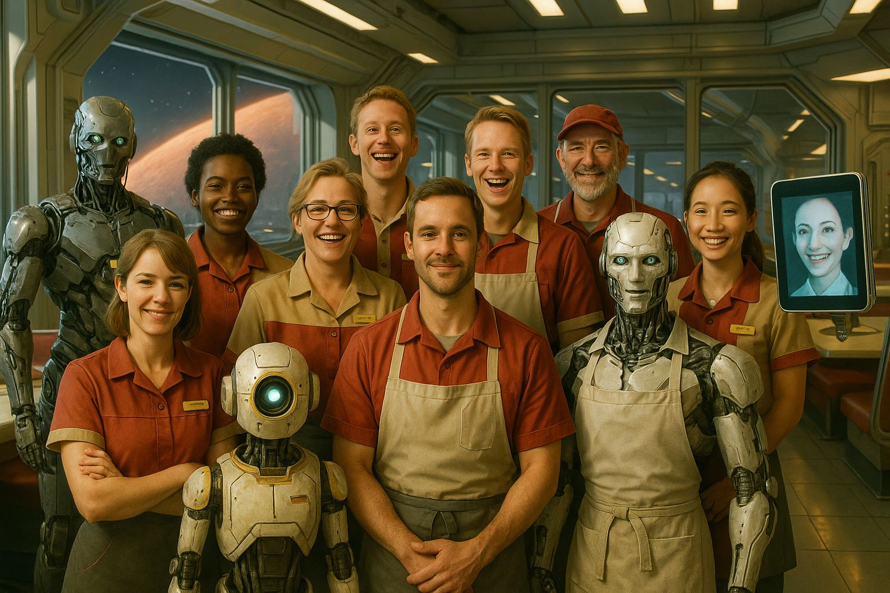

ABOUT US
企業情報
チキンハウスの事業概要・沿革・店舗案内
CHICKEN HOUSE
太陽系の食卓に、
安定したお食事を。
チキンハウスは、新歴2867年に設立された、培養タンパク質を中心とするファミリーレストランチェーンです。地球・火星・外惑星圏の各拠点で、共通規格の食事を提供しています。
メニューの食材は中央生産施設で生産され、各店舗で仕上げと盛り付けを行っています。

COMPANY PROFILE
会社概要
| 社名 | チキンハウス株式会社 CHICKEN HOUSE CO., LTD. |
|---|---|
| 設立 | 新歴2867年 |
| 本部所在地 | 太陽公転軌道・ラグランジュ管理区画 SUN-L1 / 第1食料供給ステーション |
| 事業内容 | ファミリーレストラン運営、培養タンパク質食品製造、宇宙航路向け食品供給 |
| 統括責任者 | THX-1138（中央供給事業管理官） |
| 従業員・稼働ユニット | 50,000ユニット（有人・自律稼働体を含む） |
| 主要事業拠点 | 地球、火星、木星圏カリスト、土星圏、海王星圏ほか |
OUR POLICY
食の安定供給への取り組み
太陽系各地における食料供給の継続性を確保するため、培養原料の標準化、軌道上配送拠点の整備、食品のトレーサビリティ管理を行っています。市民ランクと居住区ごとの供給枠に従い、店舗ごとの提供メニュー・数量を調整しています。
※ 新歴・制度・店舗所在地・企業概要は作品内の架空設定です。
STORE LOCATOR
太陽系の店舗を探す
惑星・衛星を選ぶと、所在地とアクセス情報が表示されます。3Dマップは概念図で、天体の大きさや距離は実際の縮尺ではありません。
太陽系マップを読み込んでいます。
上の天体ボタンから店舗情報を選択できます。
上の天体ボタンから店舗情報を選択できます。
ドラッグで視点移動・ホイールで拡大縮小・天体をクリックして選択
地球・第1居住区店
地球／旧日本列島 関東居住ブロック E-JP-07
火星・オリンポス店
火星／オリンポス山麓 第3居住ドーム M-OLY-03
カリスト・ヴァルハラ店
木星第4衛星カリスト／ヴァルハラ居住区 C-VLH-12
土星・タイタン港店
土星第6衛星タイタン／クラーケン海航路港 T-KRK-04
海王星・トリトン店
海王星第1衛星トリトン／南極熱源基地 N-TRI-06
太陽圏本部店
太陽–地球系L1／中央供給ステーション SUN-L1